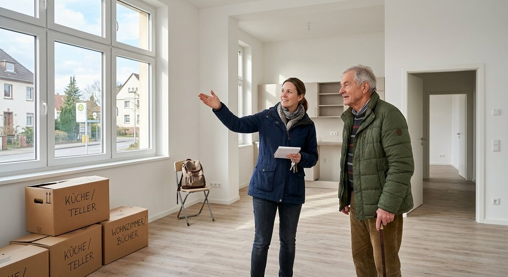

Teil 2 · Bild und Erfahrung
Karte 016
Eine Wohnung besichtigen
Ausführliches Übungsmaterial zur Vorder- und Rückseite der Karte.

Ihre Aufgabe
- was man auf dem Bild sieht
- was die Personen gerade machen
- was bei einer Wohnung wichtig ist
- ob Umziehen für Sie leicht oder stressig ist
- welche Wohnung Sie sich wünschen
Interaktives Sprechtraining
Mit ChatGPT sprechen üben
Kopiere zuerst die Übungsanweisung. Öffne anschließend die ChatGPT-App oder ChatGPT im Browser, starte den Sprachmodus (Voice Mode) und füge den Prompt in diesen Chat ein.
- Tippe auf „Prompt kopieren“.
- Öffne anschließend die ChatGPT-App oder nutze den Browser-Link.
- Melde dich bei Bedarf an und starte in ChatGPT zuerst den Sprachmodus (Voice Mode).
- Füge den bereits kopierten Prompt in den Chat des Sprachmodus (Voice Mode) ein und sende ihn ab.
- Beginne anschließend die Sprechübung.
- Wenn du die Übung beenden und Feedback bekommen möchtest, sage:
Die Übung ist beendet. Bitte gib mir jetzt Feedback.
Prompt anzeigen oder manuell kopieren
ChatGPT ist ein externer Dienst. Für den Sprachmodus (Voice Mode) musst du dich möglicherweise bei deinem ChatGPT-Konto anmelden und den Zugriff auf das Mikrofon erlauben. Verfügbare Funktionen hängen von deinem Gerät und Konto ab. Die Übung ersetzt keine offizielle Prüfungsbewertung.
Nützliche Satzanfänge
- Die Personen sind wahrscheinlich in …
- Ich vermute, dass …
- Bei einer Wohnung achte ich besonders auf …
- Ein Umzug ist oft …
- Später hätte ich gern …
Modellantwort anhören
Höre zuerst aufmerksam zu. Sprich danach nicht einfach alles nach, sondern bearbeite die Aufgabe mit eigenen Informationen.
Modellantwort
Auf dem Bild sieht man wahrscheinlich eine Wohnungsbesichtigung. Zwei Personen stehen in einem leeren Raum. Eine Person erklärt vielleicht etwas über die Wohnung, zum Beispiel über das Fenster oder die Küche. Auf dem Boden sehe ich Kartons, deshalb könnte es auch sein, dass jemand schon umzieht. Die Stimmung wirkt ruhig und konzentriert.
Für mich sind bei einer Wohnung mehrere Dinge wichtig: der Preis, die Lage und natürlich genug Platz. Auch eine gute Bus- oder Bahnverbindung ist wichtig, damit man schnell zur Arbeit oder zum Kurs kommt. Ein Umzug ist meistens stressig, weil man viele Dinge organisieren muss. Trotzdem kann ein Umzug auch ein guter Neuanfang sein. Ich hätte später gern eine helle Wohnung mit Balkon in einer ruhigen Gegend.
Mögliche Prüferfragen und Antwortideen
-
Was ist teurer in Deutschland: Wohnung oder Nebenkosten?
Antwortidee: Beides kann teuer sein, aber die Miete ist meistens das größte Thema.
-
Haben Sie schon einmal eine Wohnung gesucht?
Antwortidee: Ja, und ich fand es nicht so leicht, weil man viele Unterlagen braucht.
-
Mögen Sie lieber Stadt oder Randgebiet?
Antwortidee: Am liebsten etwas ruhiger, aber mit guter Verbindung in die Stadt.
-
Was braucht man für einen Umzug?
Antwortidee: Man braucht Kartons, Helfer, Zeit und gute Planung.
Wortschatz
| Deutsch | Englisch |
|---|---|
| die Besichtigung | viewing |
| der Umzug | move |
| die Lage | location |
| die Nebenkosten | utility / additional housing costs |
| das Randgebiet | outskirts |
| der Neuanfang | fresh start |
| der Karton | moving box |
| die Miete | rent |
Schnelltraining
Machen Sie eine kleine Liste mit drei Kriterien: unbedingt wichtig; schön, aber nicht notwendig; nicht so wichtig.